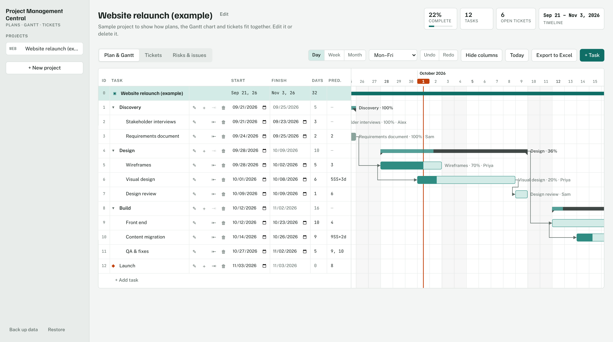

Project Management Central
A project planner with a drag-to-reschedule Gantt chart, task dependencies and milestones, plus a Kanban ticket board. Built with React and TypeScript, covered by automated tests, and deployed by CI.
- React
- TypeScript
- Vite
- Vitest
- GitHub Actions